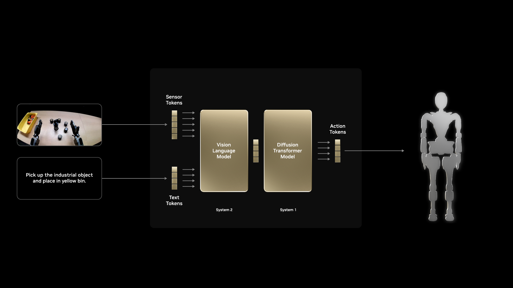
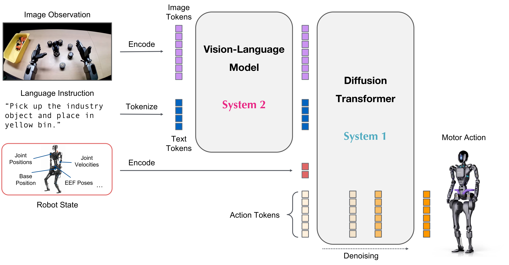

4.1 Vision-language-action models and GR00T#
Meet vision-language-action models and GR00T N1.7: how images, language and body state become actions, what pretraining and post-training each contribute, and where generalization comes from and how to test it.
From writing steps to providing goals and examples#
In the earlier chapters we tried walking, skating and kicking with pretrained policies and trained walking and slope policies. For the robot to decide by itself when to use these skills and complete a whole task on the pitch, such as “walk up to the ball and kick it into the goal”, a common approach is a modular pipeline: detect the ball, estimate where it and the goal are, plan a stance, then call the kick skill at the right moment. In this course, a controller built from detection, geometric estimation and task state that can be deployed on the robot is called the onboard policy. Every step is explainable, although as scenes and tasks multiply, the cost of maintaining explicit rules and modules can grow.
A vision-language-action model (VLA) takes a different route. You give the model a sentence describing the goal, plus enough demonstrations of “what the robot saw, what state its body was in, and what it did next”, and the model learns the mapping from observation to action. Language says what to achieve; demonstrations show how this robot achieves it.
The two approaches are not exclusive. The onboard policy still needs reliable perception and control; a VLA also depends on sensors, calibration and low-level execution and control (this course also has it call pretrained walking and kicking skills, which is a design choice of this course rather than a requirement of every VLA), and its reliable performance still depends on what the demonstrations cover: pretraining can help transfer, but actions and recovery from imbalance that the demonstrations never covered cannot be assumed to be learned.
What a VLA reads and what it outputs#
At each decision a VLA reads three kinds of information:
Input |
Example |
Purpose |
|---|---|---|
Images |
One or more camera views, possibly including past frames |
See the ball, the goal and the surroundings |
Language instruction |
“Walk to the football, kick it into the goal with the right foot, and recover to standing.” |
State the task goal |
Robot state |
Joint angles, body attitude, angular velocity, the previous action |
Describe what the body is doing right now |


A VLA illustrated with GR00T: images and language guide action generation; the next figure shows where robot state enters. The exact structure differs between VLAs. Image source: NVIDIA SO-101 Sim-to-Real course ↗.
The output is a short sequence of future actions. You decide what an action means: joint target angles, an end-effector pose, or velocity, gaze and skill requests handed to existing skills. That choice determines which demonstration labels you need and who is responsible for fast details such as balance and contact. Section 4.2 explains why the Microduck walking shot uses high-level requests.
How GR00T N1.7 turns observations into actions#
GR00T N1.7 is a general-purpose robot foundation model from NVIDIA with about three billion parameters. Its vision-language backbone, Cosmos-Reason2-2B, extracts features from the images and the instruction; a flow-matching action head combines them with the robot state to generate a continuous action sequence. The paper calls these roles “System 2” (slower, interpretive) and “System 1” (faster, action-oriented). These are conceptual names: the model does not output a human-readable plan, and they do not mean real-time asynchronous control is already implemented. In this course’s simulation every inference is synchronous (see Section 4.2).


The GR00T N1.7 architecture: robot state is encoded separately and joins the vision-language features in the diffusion transformer (System 1, the flow-matching action head). Image source: NVIDIA Isaac GR00T (Apache 2.0) ↗; the same figure appears in the NVIDIA technical blog ↗.
The interactive figure below maps the same structure onto the Microduck walking shot:
Swipe horizontally to see the full diagram
Select a module; its explanation appears here.
1Images + instruction
Images describe what the robot sees; the instruction specifies the desired outcome. The text is encoded together with the images, so no hand-calculated target coordinates are needed.
2System 2
The vision-language backbone extracts task-relevant features, such as goal direction and the ball’s region. System 2 names this perception/reasoning role; its output is features for the action head.
3System 1
Conditioned on visual-language features and robot state, the flow-matching head starts from initial noise and refines it step by step into a continuous action sequence for the current task.
4Execute actions
The executor handles units, limits and timing. For Microduck, GR00T outputs movement, gaze and kick requests while the existing motion policies keep balance and drive the joints.
5Robot state
State describes the current body. Similar images can require different actions while leaning, turning or kicking. The state branch jointly conditions the action head with visual-language features.
6Observe again
After a short execution, fresh images and state inform the next prediction. This feedback changes inputs; ordinary inference keeps model weights fixed.
Cosmos-Reason2 here is the vision-language backbone inside GR00T N1.7; it only supplies features for action prediction. Cosmos 3, introduced in Section 4.4, is a different kind of model used to understand and generate world-related video and data.
Predict a chunk of actions at once#
GR00T does not predict only the next step; it predicts an action chunk covering several future steps. The executor usually runs only the first few, then predicts again from a fresh observation. This has two benefits: neighboring actions come from the same prediction and join smoothly, and the model does not have to run at every step, which reduces the number of inferences.
How much to execute is a trade-off. Execute too much and the ball and body have changed while the robot still follows old actions; execute too little and you depend more on inference speed and communication. Section 4.2 shows this with Microduck’s real numbers: how many steps are predicted, how many are executed, and how many times the low-level controller runs between two inferences.
Pretraining, post-training and inference#
Stage |
What happens |
What it means for Microduck |
|---|---|---|
Pretraining |
General visual, language and action representations are learned from broad, multi-source data |
A starting point that has already “seen a lot of the world” |
Post-training |
Demonstrations matching the robot and task update selected parameters |
Learn Microduck’s action interface and shooting behavior |
Inference |
Current observations enter fixed weights; actions come out |
Repeated observation, action, observation |
Model weights (parameters) are the learned numbers inside a network: training changes them, inference only reads them. Hyperparameters such as batch size and learning rate are chosen before training and control how the weights are updated. Fine-tuning is a common form of post-training: continuing training on a smaller, more targeted dataset.
Post-training can freeze some parameters. Frozen modules still compute, but they receive no optimizer updates; this reduces memory and computation and lowers the risk of overfitting a small dataset. One training step in the log is one optimizer update, unrelated to a robot step or a simulation frame.
Where the data comes from#
Data for robot foundation models is often drawn as a pyramid. The wide base is web images, text and human video, which supply general visual and language knowledge. The middle is simulated and synthetic data, which can be generated at scale with exact labels. The top is real-robot data: closest to deployment but the most expensive to collect. The layers describe the roles of different data, not fixed proportions or a single training order.
All post-training data in this course comes from simulation: the onboard policy completes the shot in Isaac Lab and Newton while we record the images it saw, its body state and the requests it issued. Section 4.2 explains how this data is designed, and Section 4.3 uses it to train and validate a model.
Where generalization potential comes from#
Generalization means completing the task in situations the model did not see in training. For a VLA it has several levels, and each needs different evidence:
Level |
Example |
How to test it |
|---|---|---|
New starts |
Same pitch, robot/ball positions not in the training set |
Full-task tests from starts that were not used for training or tuning |
New appearance |
Different lighting, floor pattern or background |
Full-task tests under appearance conditions not seen in training |
New phrasing |
The same instruction worded differently |
Test with phrasings absent from training and confirm the behavior is unchanged |
New task |
“Walk up to the ball but do not touch it” |
Requires demonstrations and a separate evaluation for that task; cannot be inferred from shooting results |
General visual and language knowledge from pretraining makes it possible for a model to still recognize “this is a ball, that is the goal” when the appearance or wording changes. That is the promise of large models. But potential is not established capability: reliable performance at the action level depends mainly on what the demonstrations cover. If the demonstrations cover one pitch, one instruction and one kind of start, only that situation can be confirmed; other situations may transfer, but you only know by testing them separately.
So to judge whether a VLA really generalizes, keep the test conditions outside training and look at full-task success, not at training loss or a few smooth videos. The GR00T in this course is trained on one green pitch with one shooting instruction, and the validation in Section 4.3 uses only a few episodes; it demonstrates the method, not proven generalization. Section 4.4 discusses how to expand step by step to more environments.
Is GR00T always better than the onboard policy?#
Not necessarily. The same task can be implemented with the onboard policy, a small visual policy or GR00T; a comparison must use the same test starts, the same success criterion and the same low-level skills. Success rate is only one measure; inference latency, training cost (including feature caching and memory), the number of demonstrations needed and whether one model can accept several instructions also matter. If a small model is faster and more accurate on a fixed task, that is a valuable finding in itself; GR00T’s extra capabilities are more likely to pay off when many tasks or scenes are needed.
Check your understanding
The training loss is already low. Why can we still not say GR00T has learned to shoot?
Show explanation
Training loss only shows that the model fits the demonstrated actions. When the model controls the robot, its inputs change with its own actions and can reach states that never appeared in the demonstrations. Whether it completes the task must be tested in closed loop from starts that were not used in training, judged by a full goal, no fall and recovering to standing.
Check your understanding
If the model still succeeds after the same instruction is reworded, does that show it can “walk up to the ball but not touch it”?
Show explanation
No. Rewording tests language understanding of the same task; a new task needs different actions and therefore matching demonstrations and its own test.